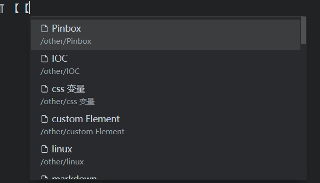

思源畅想-任意应用输入框内块引用
文章分享到的地方：
思源畅想 - 任意应用输入框内块引用 ld246
功能
想法
或许可以使用类似于 AutoHotkey 这样的工具来监听输入
[[
然后弹出和在思源内部使用一样的列表

当用户选择后，在当前输入框填充入 [ html链接 | md格式链接 | 文本 ] 。
场景畅想
在聊天应用的输入框直接输入 【【 就可以搜索自己笔记本中的内容然后填充进去
任意应用输入框内引用实现记录